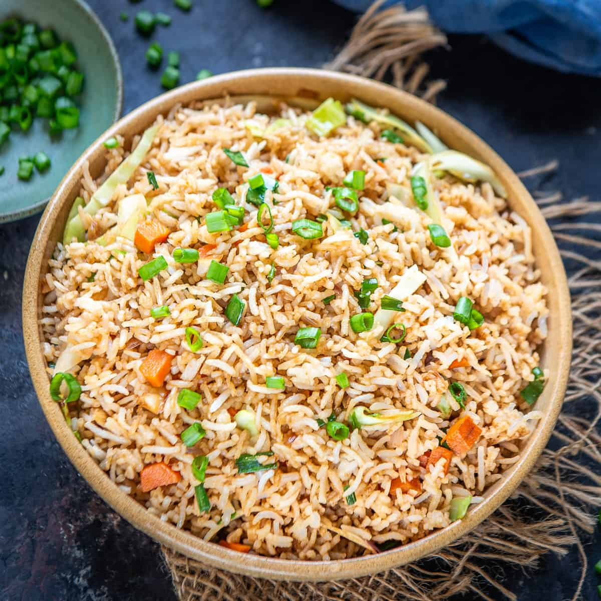

My Favourite Foods
BIRIYANI

Biryani is a mixed rice dish with its origins among the Muslims of the Indian subcontinent.It is made with Indian spices, rice, and meat (chicken, beef, goat, pork, lamb, prawn, or fish), and sometimes, in addition, eggs and/or potatoes in certain regional varieties. Biryani is popular throughout the Indian subcontinent, as well as among its diaspora. It is also prepared in other regions such as parts of Afghanistan, Iran and Iraq. It is a dish that has acquired a niche for itself in South Asian cuisine.
FRIED RICE

Fried rice is a dish of cooked rice that has been stir-fried in a wok or a frying pan and is usually mixed with other ingredients such as eggs, vegetables, seafood, or meat. It is often eaten by itself or as an accompaniment to another dish. Fried rice is a popular component of East Asian, Southeast Asian and certain South Asian cuisines. As a homemade dish, fried rice is typically made with ingredients left over from other dishes, leading to countless variations. Fried rice first developed during the Sui Dynasty in China and as such all fried rice dishes can trace their origins to Chinese fried rice
CHICKEN 65
Chicken 65 is a spicy, deep-fried chicken dish originating from Hotel Buhari, Chennai, India, as an entrée, or quick snack. The flavour of the dish can be attributed to red chillies, but the exact set of ingredients for the recipe can vary. It can be prepared using boneless or bone-in chicken and is usually served with onion and lemon garnish. Vegetarian variants like "Paneer 65" or "Gobi 65" use paneer or cauliflower instead. While the name "Chicken 65" is universally used to refer to the dish, there are many different theories claiming its origins.
SANDWHICH

A sandwich is a food typically consisting of vegetables, sliced cheese or meat, placed on or between slices of bread, or more generally any dish wherein bread serves as a container or wrapper for another food type. The sandwich began as a portable finger food in the Western world, though over time it has become prevalent worldwide.
Sandwiches are a popular type of lunch food, taken to work, school, or picnics to be eaten as part of a packed lunch. The bread may be plain or be coated with condiments, such as mayonnaise or mustard, to enhance its flavour and texture. As well as being homemade, sandwiches are also widely sold in restaurants and can be served hot or cold.There are both savoury sandwiches, such as deli meat sandwiches, and sweet sandwiches, such as a peanut butter and jelly sandwich.
SHAWARMA

Shawarma is a dish in Middle Eastern cuisine consisting of meat cut into thin slices, stacked in a cone-like shape, and roasted on a slowly-turning vertical rotisserie or spit. Originally made of lamb or mutton, today's shawarma may also be chicken, turkey, beef, or veal. Thin slices are shaved off the cooked surface as it continuously rotates.Shawarma is one of the world's most popular street foods, especially in Egypt, the countries of the Levant and the Arabian Peninsula, and beyond.